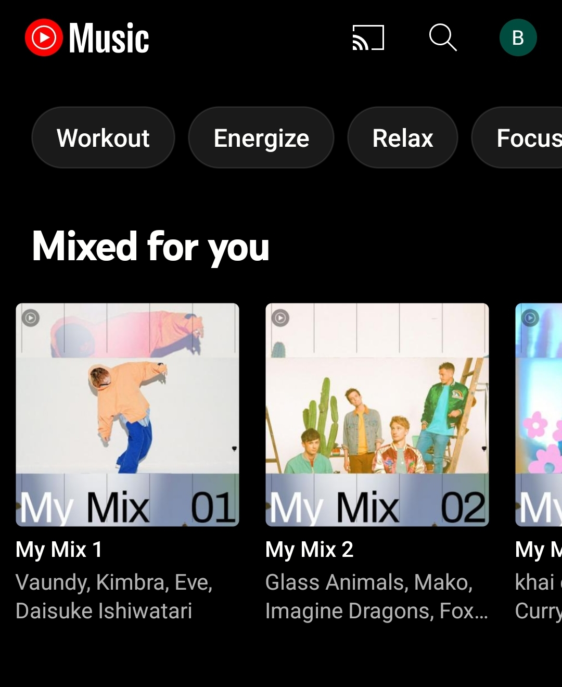
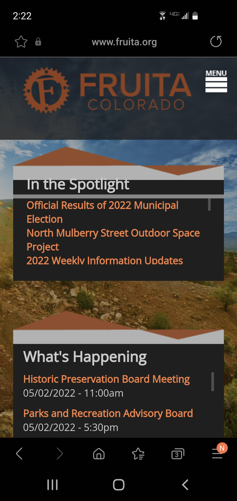
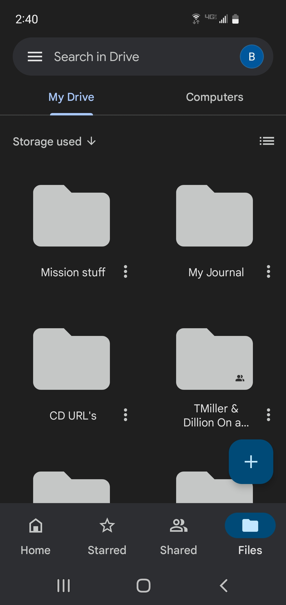

Hick's Law
Youtube Music
Youtube Music
Hicks Law - states that the more choices a person is presented with, the longer the person will take to reach a decision. Named after psychologists William Edmund Hick and Ray Hyman, Hick’s Law finds frequent application in user experience (UX) design—namely, to avoid overwhelming users with too many choices, thereby keeping them engaged.
The entire goal of youtube music is to essentially take the need for choice out of the algorithm for its user. So as the user is liking songs they enjoy and skipping ones they don't Youtube music will attempt to create playlists that said user will enjoy and with one click upon opening the app the music they enjoy is playing.
The Rule of Thirds
City of Fruita
City of Fruita
The rule of thirds - web design technique is used for creating pleasing aesthetics and balance in images. It basically says that placing items of interest on the “thirds” of an image is more pleasing to the eye than centering or more other symmetrical approaches. These thirds are created by dividing an image (or working space) into nine equal parts, with two equally spaced horizontal lines and two equally spaced vertical lines.
The Fruita web page carefully splits up its main sections of information in a very uniformed manner. The Title and menu are nicely labeled at the top and with perfect distance from there we see the spotlight section and current planned events below. This allows for pleasant reading for viewers and draws their attention to what Fruita wants them to see.
White Space and Clean Design
Google Drive
Personal Google Drive
White Space and Clean Design - White space are areas on a webpage without text or picture. Clean Design is to not have design elements pulling attention away from the important things.
In my photo example the white space has been turned black instead due to a setting on my device however the principle remains the same. There is plenty of empty space which draws attention to the important details being all of the users folders and other options. The design is clean and easy to look at as well due to keeping the elements on the page nicely spaced from each other and uniform.